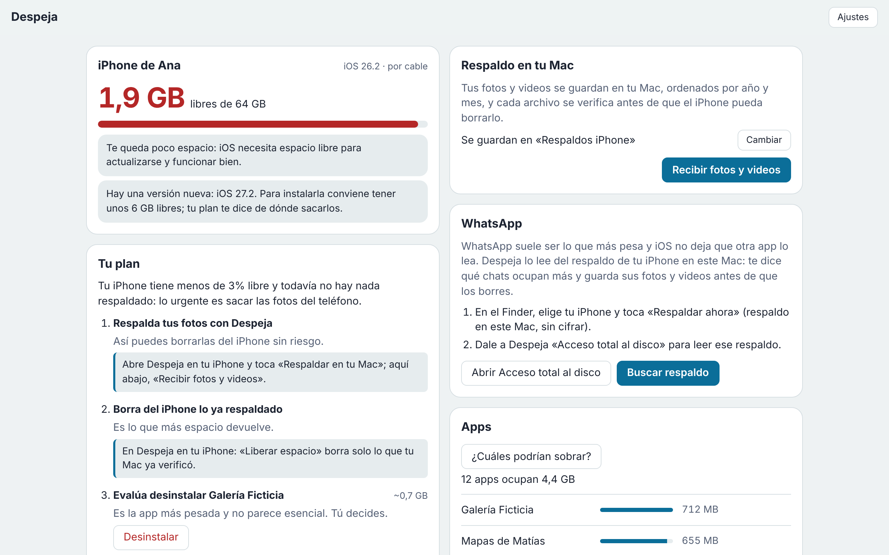
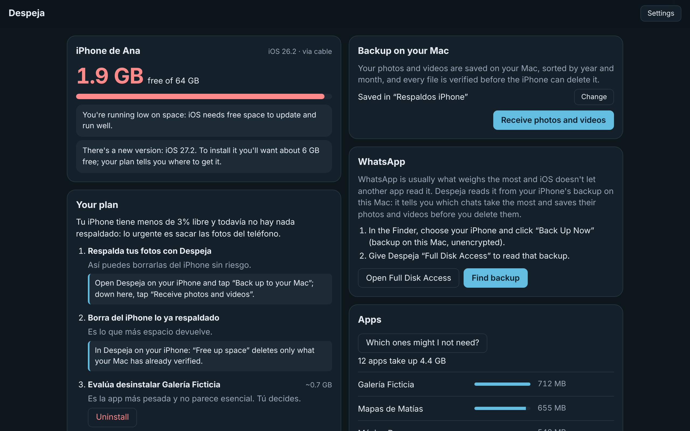
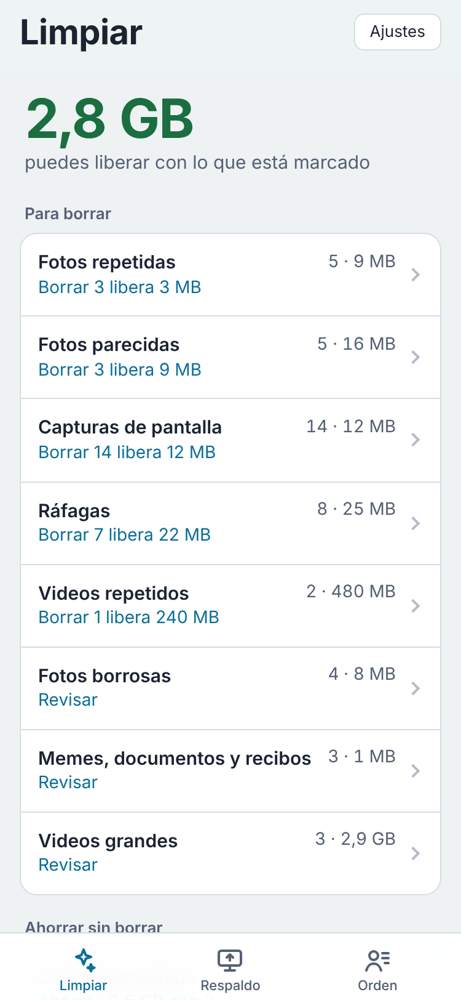

Gratis · Código abierto · En tu computadorFree · Open source · On your computer
Deja tu iPhone solo con lo necesario.Keep only what you need on your iPhone.
Despeja ve qué ocupa espacio en tu iPhone, respalda tus fotos y videos en tu Mac verificándolos uno por uno y borra del iPhone solo lo que ya está a salvo. Tu propia IA revisa el resumen y te propone un plan. Todo queda entre tu Mac y tu iPhone.Despeja shows what takes up space on your iPhone, backs up your photos and videos to your Mac verifying each one, and deletes from the iPhone only what's already safe. Your own AI reviews the summary and suggests a plan. Everything stays between your Mac and your iPhone.
Primera versión: la app de iPhone se instala desde tu Mac con Xcode (aún no está en la App Store).First version: the iPhone app is installed from your Mac with Xcode (it's not on the App Store yet).
Gratis, sin cuenta y sin publicidad.Free, no account, no ads.

Lo que haceWhat it does
Ve lo que ocupa espacioSee what takes up space
Tu Mac ve el iPhone por cable o Wi-Fi: espacio libre, apps de la más pesada a la más liviana y si hay un iOS más nuevo.Your Mac sees the iPhone via cable or Wi-Fi: free space, apps from heaviest to lightest and whether a newer iOS is out.
Respaldo verificadoVerified backup
Cada foto y video viaja cifrado por tu Wi-Fi, con su Live Photo y sus ediciones, y se comprueba archivo por archivo en la carpeta que elijas.Every photo and video travels encrypted over your Wi-Fi, with its Live Photo and edits, and is checked file by file in the folder you choose.
Limpia solaCleans up for you
Agrupa fotos repetidas y parecidas, capturas, ráfagas, borrosas, memes y videos repetidos, con lo que sobra ya marcado. Revisas en cuadrícula o una por una, deslizando.Groups duplicate and similar photos, screenshots, bursts, blurry shots, memes and duplicate videos, with the extras already selected. Review in a grid or one by one, swiping.
Ahorra sin borrarSave without deleting
Comprime videos a HEVC y convierte Live Photos en fotos, con la misma fecha y lugar. También junta contactos repetidos.Compresses videos to HEVC and turns Live Photos into photos, with the same date and place. It also merges duplicate contacts.
WhatsApp sin miedoWhatsApp without fear
Desde el respaldo de tu iPhone en el Mac, te dice qué chats ocupan más y guarda sus fotos y videos antes de que los borres en WhatsApp.From your iPhone's backup on the Mac, it shows which chats take the most and saves their photos and videos before you delete them in WhatsApp.
Borra sin miedoDelete without fear
El iPhone borra solo lo que tu Mac ya verificó. Si algo falló, no se toca.The iPhone deletes only what your Mac has verified. If anything failed, it isn't touched.
Un plan con tu IAA plan with your AI
Claude, ChatGPT o Gemini, con tu cuenta, revisa el resumen (nunca tus fotos) y te dice qué hacer primero. Tú decides cada paso.Claude, ChatGPT or Gemini, with your account, reviews the summary (never your photos) and tells you what to do first. You decide every step.
Honesta con lo que iOS no dejaHonest about what iOS doesn't allow
La caché de otras apps o los chats de WhatsApp no se pueden borrar desde afuera: Despeja te dice exactamente dónde hacerlo.Other apps' caches or WhatsApp chats can't be deleted from outside: Despeja tells you exactly where to do it.


Cómo funcionaHow it works
Conecta tu iPhoneConnect your iPhone
Por cable la primera vez y toca «Confiar». Después también por Wi-Fi.Via cable the first time and tap “Trust”. After that, over Wi-Fi too.
Arma tu planMake your plan
Tu IA mira el espacio, las apps y la versión de iOS, y propone qué hacer primero.Your AI looks at the space, the apps and the iOS version, and suggests what to do first.
Respalda en tu MacBack up to your Mac
El Mac muestra un código, lo escribes en el iPhone y se mandan tus fotos y videos, verificados.The Mac shows a code, you type it on the iPhone and your photos and videos are sent, verified.
Libera espacioFree up space
Borra del iPhone lo que ya está a salvo y vacía «Eliminados recientemente».Delete from the iPhone what's already safe and empty “Recently Deleted”.
Lo que gana y lo que noWhere it wins and where it doesn’t
| QuéWhat | Despeja | Fotos de iCloud | Captura de Imagen |
|---|---|---|---|
| Dónde quedan tus fotosWhere your photos end up | En tu Mac, en la carpeta que elijasOn your Mac, in the folder you choose | En iCloudIn iCloud | En tu MacOn your Mac |
| Borrar del iPhoneDeleting from the iPhone | Solo lo verificado, archivo por archivoOnly what's verified, file by file | Deja versiones livianas en el iPhoneKeeps lightweight versions on the iPhone | Puedes borrar al importarYou can delete on import |
| Qué más ocupa espacioWhat else takes up space | Apps, versión de iOS y un plan con tu IAApps, iOS version and a plan with your AI | NoNo | NoNo |
| CostoCost | Gratis y abiertoFree and open source | 5 GB gratis; después, pago mensual5 GB free; then a monthly fee | Gratis, viene con macOSFree, comes with macOS |
Permisos e internet: lo que pide y a qué se conectaPermissions and internet: what it asks for and what it connects to
Esto sale de las piezas que usa Despeja: si una pide algo o sale a algún lado, lo dice aquí. Sin cuentas ni telemetría.This comes from the building blocks Despeja uses: if one asks for something or goes somewhere, it says so here. No accounts, no telemetry.
PermisosPermissions
- FotosPhotos (iPhone): Para contar, respaldar y, si lo pides, borrar tus fotos y videos. Se pide recién cuando tocas «Revisar mis fotos» o «Respaldar».To count, back up and, if you ask, delete your photos and videos. It's asked only when you tap “Check my photos” or “Back up”.
- Red localLocal network (iPhone): Para encontrar tu Mac en tu Wi-Fi y mandarle los respaldos, sin pasar por internet.To find your Mac on your Wi-Fi and send it the backups, without going through the internet.
- Contactos y CalendarioContacts and Calendar (iPhone): Solo si tocas «Revisar contactos» o «Revisar calendario», para encontrar repetidos y eventos viejos.Only if you tap “Check contacts” or “Check calendar”, to find duplicates and old events.
- Acceso total al disco (opcional)Full Disk Access (optional) (Mac): Solo para leer WhatsApp en el respaldo de tu iPhone que guarda el Finder. Sin él, todo lo demás funciona igual.Only to read WhatsApp from your iPhone backup saved by the Finder. Without it, everything else works the same.
Ninguno especial del sistema: ni cámara, ni micrófono, ni avisos. Solo abre lo que tú eliges.No special system permissions: no camera, microphone or notifications. It only opens what you pick.
A qué se conectaWhat it connects to
- api.github.com · github.com · objects.githubusercontent.com · release-assets.githubusercontent.com: Para saber si hay una versión nueva (al abrir y cada 6 horas) y bajarla de los Releases del repositorio de la app cuando tú lo pides. Antes de instalarla se comprueba su huella SHA-256.To check for a new version (on launch and every 6 hours) and download it from the app's repository Releases when you ask. Its SHA-256 fingerprint is checked before installing.
- api.ipsw.me: Saber si hay una versión de iOS más nueva para tu modelo de iPhone (no se manda nada tuyo).To know if there's a newer iOS for your iPhone model (nothing of yours is sent).
- Tu IAYour AI: Si la usas, Claude Code, Codex o Gemini se conectan a su proveedor con tu cuenta y reciben solo lo que la app les pasa para esa tarea. Corren sin herramientas y sin tu memoria personal.If you use it, Claude Code, Codex or Gemini connect to their provider with your account and receive only what the app gives them for that task. They run without tools and without your personal memory.
A nada: la app no sale a internet por su cuenta.Nothing: the app doesn't go online on its own.
Lo que la gente preguntaWhat people ask
¿Qué pasa si se corta el Wi-Fi a mitad del respaldo?What if the Wi-Fi drops halfway through the backup?
Nada se pierde: solo queda marcado como respaldado lo que tu Mac ya verificó. Vuelve a tocar «Respaldar» y sigue donde quedó.Nothing is lost: only what your Mac already verified is marked as backed up. Tap “Back up” again and it continues where it left off.
¿Despeja borra la caché de otras apps o mis chats de WhatsApp?Does Despeja clear other apps' caches or my WhatsApp chats?
No: iOS no deja que ninguna app toque lo de otra. Despeja te dice cuáles pesan más y exactamente dónde limpiarlas en tu iPhone.No: iOS doesn't let any app touch another's data. Despeja shows which ones weigh the most and exactly where to clean them on your iPhone.
¿Qué ve mi IA?What does my AI see?
Solo un resumen: espacio, tamaños y nombres de apps, versión de iOS y cuánto hay respaldado. Nunca tus fotos, nombres de archivos ni contenido.Only a summary: space, app sizes and names, iOS version and how much is backed up. Never your photos, file names or content.
¿Necesito el cable siempre?Do I always need the cable?
Solo la primera vez, para que el iPhone confíe en tu Mac. Después funciona por Wi-Fi; para respaldos muy grandes el cable es más rápido.Only the first time, so the iPhone trusts your Mac. After that it works over Wi-Fi; for very large backups the cable is faster.
¿Por qué la app de iPhone se instala con Xcode?Why is the iPhone app installed with Xcode?
Todavía no está en la App Store. Con Xcode y tu Apple ID la instalas gratis; con una cuenta gratuita dura 7 días y se reinstala igual.It isn't on the App Store yet. With Xcode and your Apple ID you install it for free; with a free account it lasts 7 days and you reinstall it the same way.
¿Cómo se actualiza? ¿Pierdo algo?How does it update? Do I lose anything?
Al abrir y cada 6 horas, la app revisa si hay una versión nueva en sus Releases de GitHub y te avisa dentro de la app, en Ajustes. Si la instalas, la baja, comprueba su huella SHA-256, reemplaza la app y vuelve a abrirla. Nunca en medio de algo que esté haciendo. Tus datos viven fuera de la app: actualizar no los toca.On launch and every 6 hours, the app checks its GitHub Releases for a new version and tells you inside the app, in Settings. If you install it, it downloads it, checks its SHA-256 fingerprint, replaces the app and reopens it. Never in the middle of something it's doing. Your data lives outside the app: updating doesn't touch it.
¿Por qué mi computador dice que no puede verificar la app?Why does my computer say it can't verify the app?
Porque es un proyecto gratis que no paga los certificados de Apple ni de Microsoft. En macOS 15: abre la app una vez, ve a Ajustes del Sistema → Privacidad y seguridad y, abajo, toca «Abrir igualmente». Cada descarga tiene su huella SHA-256 en el Release y el código de cada versión está en GitHub.Because it's a free project that doesn't pay for Apple or Microsoft certificates. On macOS 15: open the app once, go to System Settings → Privacy & Security and, at the bottom, click “Open Anyway”. Every download has its SHA-256 fingerprint in the Release, and each version's code is on GitHub.
¿Dónde están mis datos?Where is my data?
En tu Mac (~/Library/Application Support/Despeja) y en la app del iPhone, en archivos de formato abierto. Tus fotos quedan en la carpeta que elijas. No hay servidores ni cuentas: nada sale de tus equipos sin que lo pidas.On your Mac (~/Library/Application Support/Despeja) and in the iPhone app, in open-format files. Your photos stay in the folder you choose. There are no servers or accounts: nothing leaves your devices unless you ask.
¿Qué IA uso? ¿Tengo que pagar otra?Which AI do I use? Do I have to pay for another one?
La tuya: Claude Code, Codex o Gemini, con tu propia cuenta. La app no tiene una IA propia ni te cobra por usarla: corre la que ya tienes, sin herramientas y sin tu memoria personal, y solo le pasa lo que hace falta.Yours: Claude Code, Codex or Gemini, with your own account. The app has no AI of its own and doesn't charge you for one: it runs the one you already have, without tools or your personal memory, and only gives it what's needed.
¿Qué permisos pide y a qué se conecta?What permissions does it ask for and what does it connect to?
Lo justo, y todo está en «Permisos e internet»: sale de las piezas que usa la app, así nunca dice de más ni de menos. Nunca manda nada tuyo a un servidor nuestro: no tenemos.Only what's needed, and it's all in “Permissions and internet”: it comes from the building blocks the app uses, so it never says more or less than the truth. It never sends anything of yours to a server of ours: we don't have one.
¿Cuánto cuesta?How much does it cost?
Nada. Es gratis y de código abierto, sin cuentas ni publicidad.Nothing. It's free and open source, with no accounts or ads.
DescargarDownload
Todas las versiones, con la huella SHA-256 de cada archivo, en los Every version, with the SHA-256 fingerprint of each file, in the Releases de GitHubGitHub Releases.
La vista previa funciona en tu navegador con datos de ejemplo. Nada que instalar.The preview runs in your browser with sample data. Nothing to install.
Abrir la vista previaOpen the preview